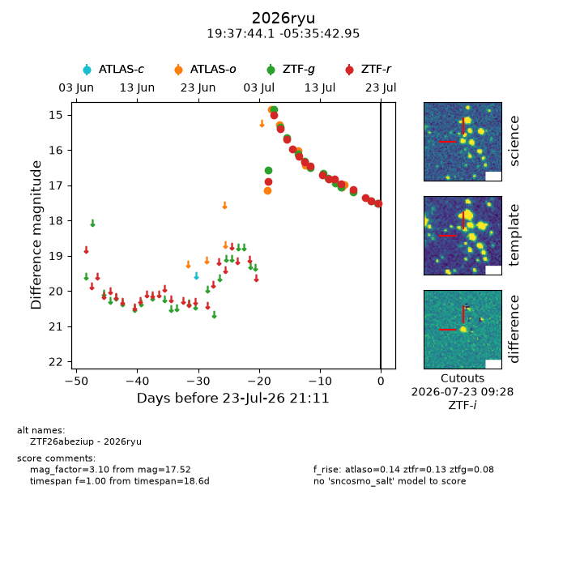
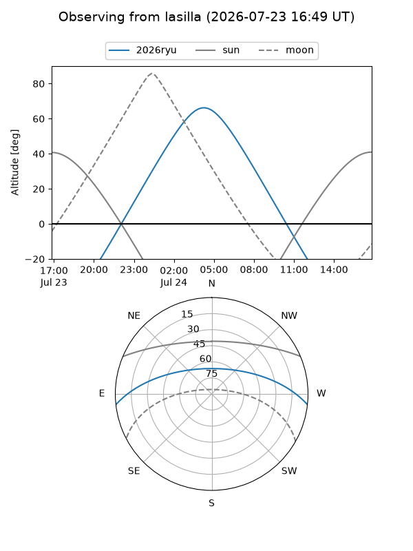
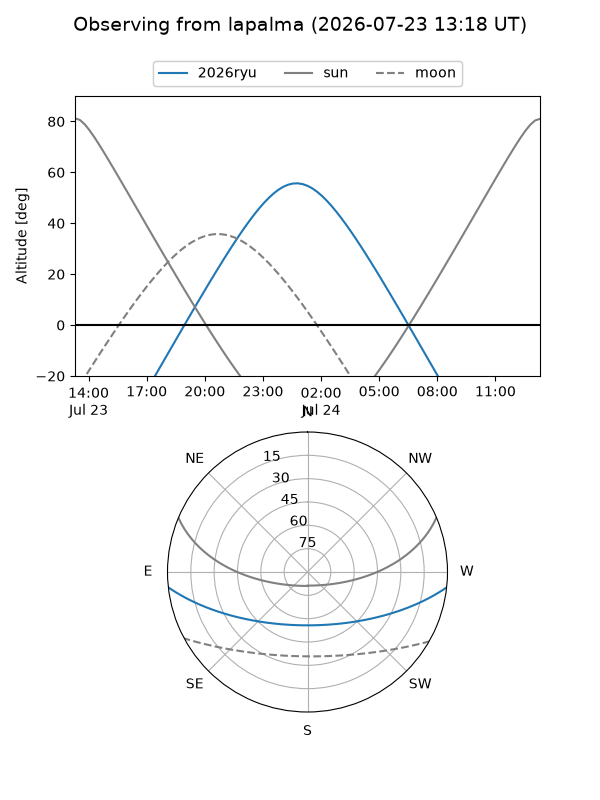
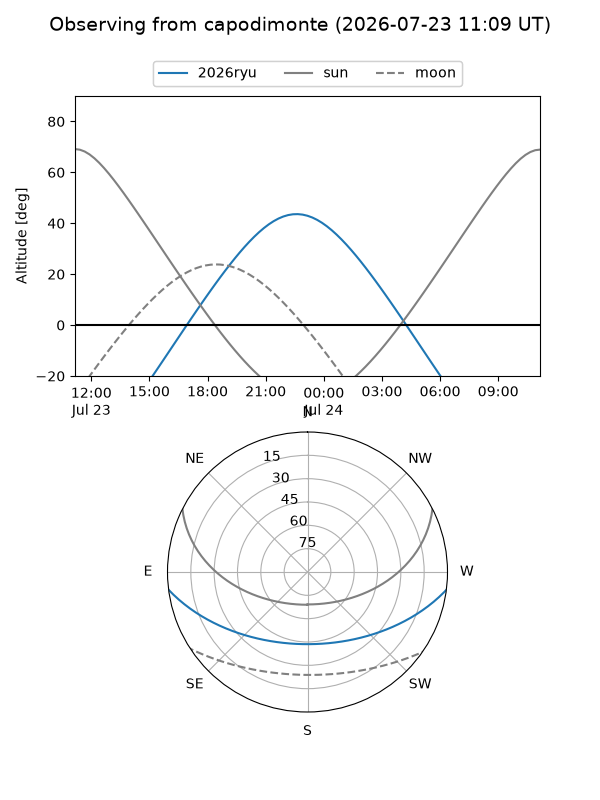

2026ryu
Target 2026ryu at 2026-07-23 21:14
Aliases and brokers:
FINK-ZTF: ztf.fink-portal.org/ZTF26abeziup
Lasair-ZTF: lasair-ztf.lsst.ac.uk/objects/ZTF26abeziup
ALeRCE-ZTF: alerce.online/object/ZTF26abeziup
YSE-PZ: ziggy.ucolick.org/yse/transient_detail/2026ryu
TNS name: wis-tns.org/object/2026ryu
Direct TNS query: direct search
alt names
ZTF26abeziup (ztf,fink_ztf)
2026ryu (tns,yse)
Coordinates:
equatorial (ra, dec) = 294.4337,-5.59527
equatorial (HMS+DMS) = 19:37:44.08,-05:35:42.95
galactic (l, b) = (33.1833,-12.83666)
Flags:
TNS type: nan
Photometry:
last atlaso=16.99, ztfg=17.52, ztfr=17.52
8 atlaso, 14 ztfg, 16 ztfr detections
Lightcurve

Visibility



Additional plots